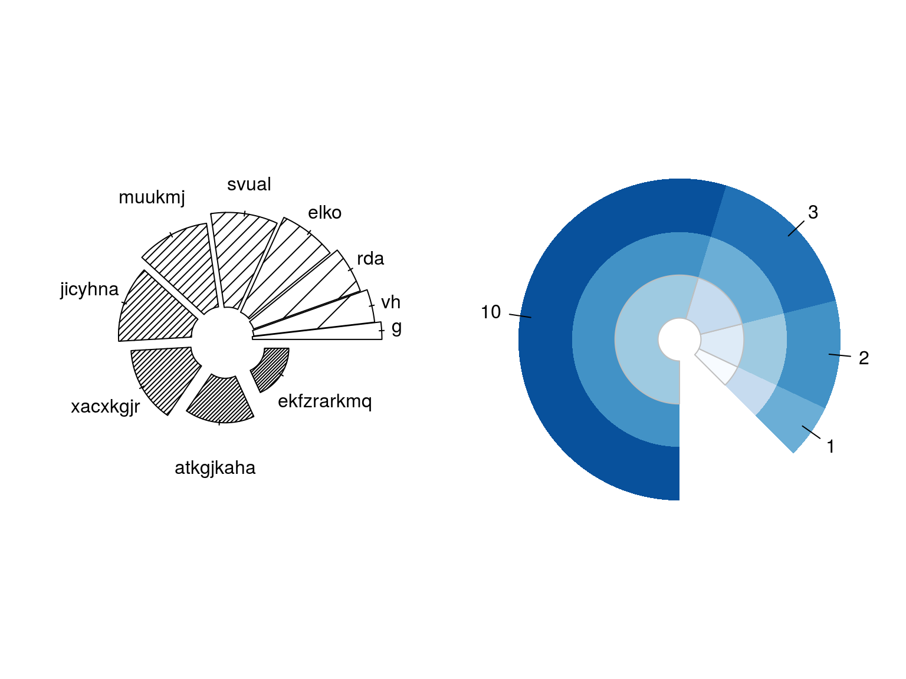
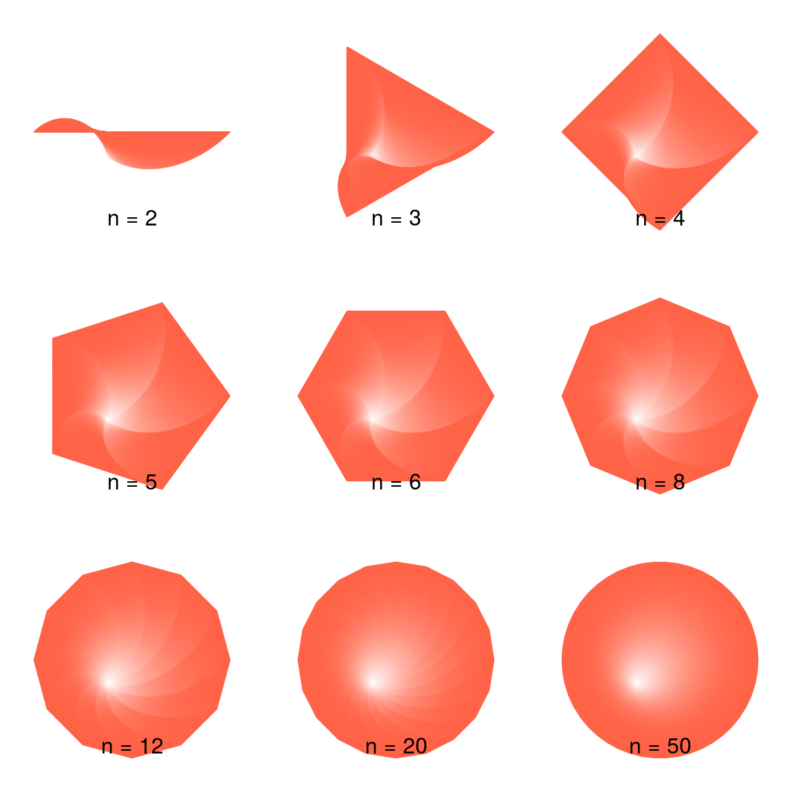
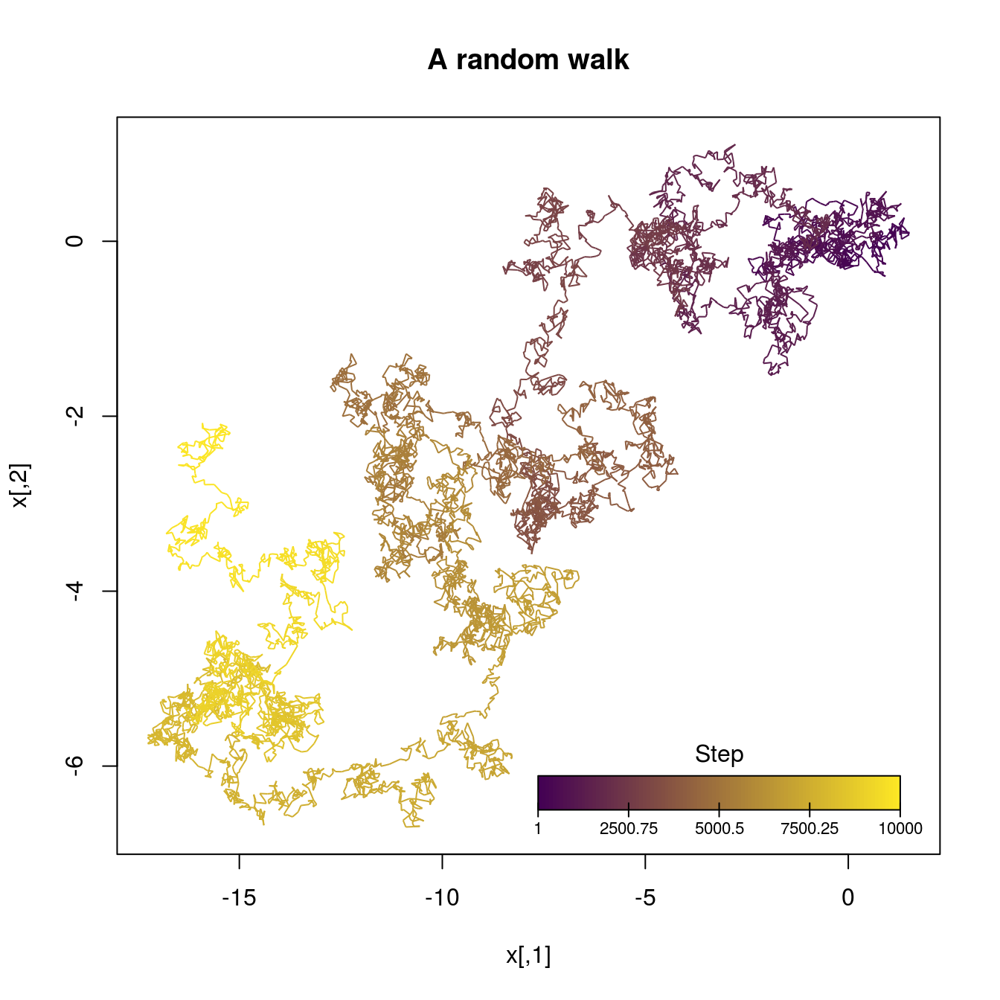
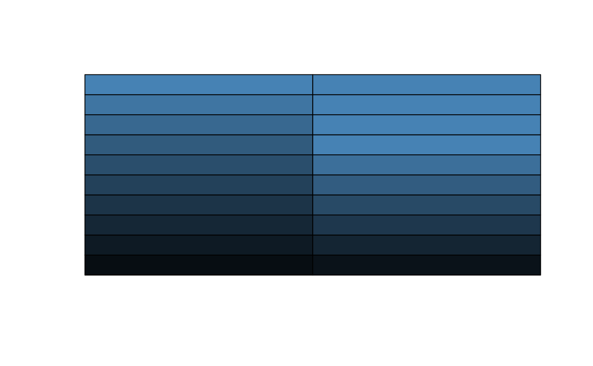

The goal of polygons is to …
Example
Here is a basic example of a very controversial type of plot but that anyway can be useful in some situations… the pie chart!:
library(polygons)
oldpar <- par(mfrow=c(1,2), mai=rep(0, 4))
piechart(1:10, density=(1:10)^2/2, slice.off = (1:10)/30, doughnut = .5,
radius = sqrt(10:1),
# Here we are setting random labels...
labels=sapply(1:10, function(x) paste(sample(letters, x, TRUE), collapse=""))
)
vals <- c(1,2,3,10)
# Outer (includes labels)
piechart(vals, col=grDevices::blues9[5:8], border=NA, doughnut = .5,
radius=.75, labels=vals, init.angle = 315, last.angle = 270)
# Middle
piechart(vals, col=grDevices::blues9[3:6], border=NA, doughnut = .3,
radius=.5, add=TRUE, init.angle = 315, last.angle = 270)
# Inner
piechart(vals, col=grDevices::blues9[1:4], border="gray", doughnut = .1,
radius=.3, add=TRUE, init.angle = 315, last.angle = 270)
Nice n-sided polygons with the npolygon function:
oldpar <- par(no.readonly = TRUE)
par(xpd = NA, mfrow = c(3, 3), mai = rep(0, 4))
for (n in c(2, 3, 4, 5, 6, 8, 12, 20, 50)) {
plot.new()
plot.window(c(-1.25,1.25), c(-1.25,1.25))
# We loop through this sequence to generate a nice decay of colors
for (i in seq(1, .0005, length.out = 200)) {
col <- adjustcolor("tomato", alpha.f = i)
# After calling npolygon, we call polygon to draw it
polygon(npolygon(x=(i-1)/4, y = (i-1)/4, r = i, d = i-1, n = n),
col = NA, border=col)
}
mtext(sprintf("n = %i", n), side = 1, line = -3)
}
Color decayed segments with segments_gradient and a nice colorkey with colorkey
set.seed(2315231)
n <- 1e4
x <- cbind(cumsum(rnorm(n, sd=.1)), cumsum(rnorm(n, sd=.05)))
plot(x, type="n", main="A random walk")
segments_gradient(x, col = colorRamp2(viridis::viridis(2)))
# And nice color keys
colorkey(.5,0,1,.1, cols = viridis::viridis(2), tick.range = c(1, n),
main = "Step", tick.args = list(cex=.7))
A faster implementation of colorRamp, colorRamp2 which allows specifying threshold levels (mixing levels) for the colors
myf <- colorRamp2(c("black", "steelblue"))
myf2 <- colorRamp2(c("black", "steelblue"), thresholds=c(0, .7))
plot.new()
plot.window(xlim = c(0,2), ylim = c(1, 11))
rect(
xleft = 0,
xright = 1,
ybottom = 1:10,
ytop = 2:11,
col = rgb(myf((1:10)/10), maxColorValue = 255)
)
rect(
xleft = 1,
xright = 2,
ybottom = 1:10,
ytop = 2:11,
col = rgb(myf2((1:10)/10), maxColorValue = 255)
)